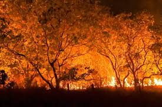
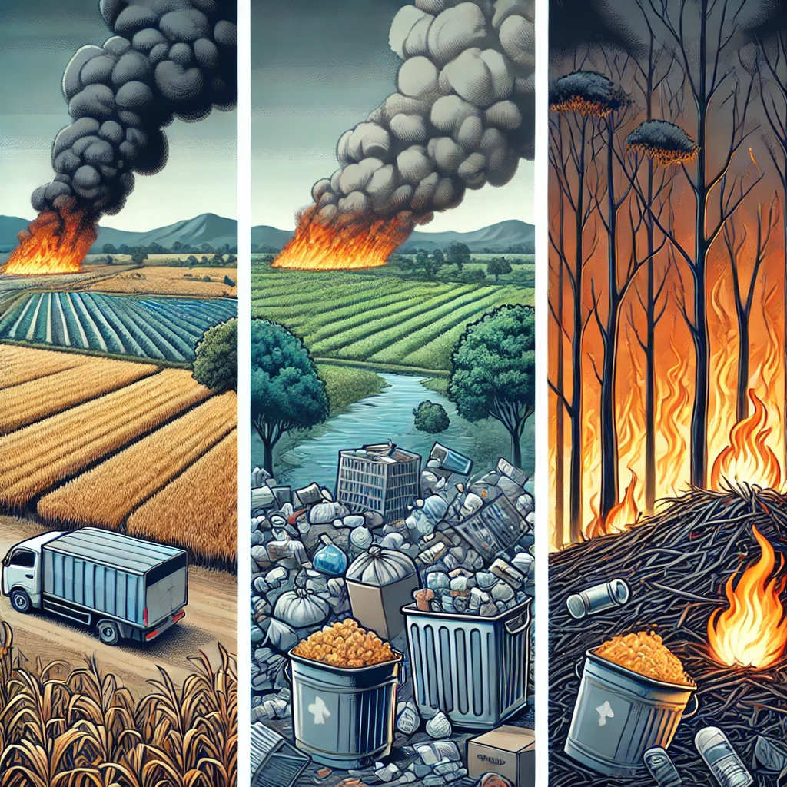
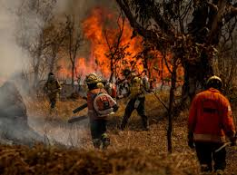
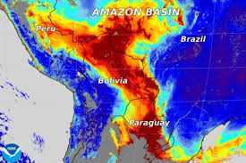

Queimadas no Brasil
As queimadas são incêndios que acontecem de forma descontrolada, causando danos à vegetação e ao meio ambiente. Aqui abordaremos as causas, consequências e como preveni-las.

Causas das Queimadas
Agricultura descontrolada
Despejo de lixo
Queimadas ilegais

Consequências das Queimadas
Impactos Ambientais
As queimadas afetam a fauna, flora e a qualidade do ar, destruindo ecossistemas inteiros.
Impactos Sociais e Econômicos
Afetam a saúde pública, prejudicam a economia local e causam o deslocamento de comunidades.

Prevenção e Combate
Aqui estão algumas dicas para prevenir queimadas:
- Evitar despejo de lixo em áreas de vegetação
- Fiscalizar queimadas ilegais
- Participar de campanhas de conscientização
combate ao incendio
Galeria de Fotos



Contato
E-mail: hanshwkfuri@gmail.com
Telefone: (24) 999013881